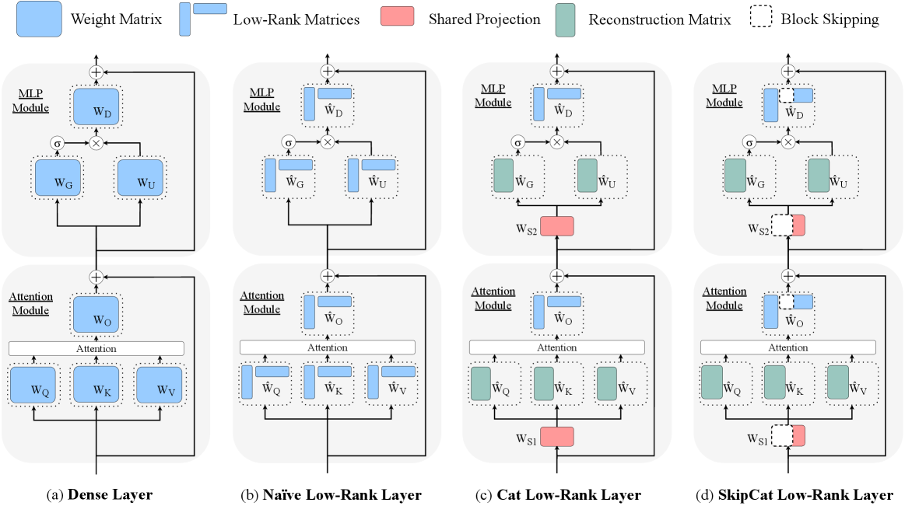

Why it matters왜 중요한가
Low-rank compression only pays off below half-rank — exactly where accuracy collapses.
저랭크 압축은 'rank 절반 이하'에서야 이득인데, 거기가 바로 정확도가 붕괴하는 지점이다.
SVD-based compression replaces a weight with two thin matrices, but it only reduces compute/memory once the rank drops below half the original — and that aggressive truncation discards too much. The question SkipCat asks: at a fixed compression rate, how do we retain more effective ranks so accuracy survives?
SVD 압축은 가중치를 두 개의 얇은 행렬로 바꾸지만, rank가 원본의 절반 아래로 떨어져야 연산·메모리가 줄어든다 — 그 공격적 절단이 너무 많이 버린다. SkipCat의 질문: 고정된 압축률에서 유효 rank를 어떻게 더 남겨 정확도를 지킬까?

By the numbers핵심 숫자
@30% (vs prior low-rank)제로샷 정확도 향상
@30% (기존 저랭크 대비)
(others ≥ 9.95%)정확도 하락 @20%
(타 기법 ≥ 9.95%)
(others ≥ 13.54%)정확도 하락 @30%
(타 기법 ≥ 13.54%)
all baselines@20%SkipCat@30%이 모든
baseline@20%보다 우위
(A100)TTFT 속도향상 @80%
(A100)
(also stacks +LoRA)학습 불필요
(LoRA와도 결합)
Results — more rank, lower drop결과 — rank를 더 남겨 하락을 줄임
| Method | Wiki2 PPL↓ | C4 PPL↓ | Acc↑ | Drop↓ |
|---|---|---|---|---|
| Dense (1.0×)Dense (1.0×) | 5.47 | 7.26 | 54.79 | — |
| ASVD (20%) | 9.06 | 11.66 | 48.81 | 5.98 |
| SVD-LLM (20%) | 8.82 | 13.42 | 44.84 | 9.95 |
| SkipCat (20%) | 6.29 | 8.95 | 52.59 | 2.20 |
| SVD-LLM (30%) | 11.75 | 19.37 | 41.25 | 13.54 |
| SkipCat (30%) | 7.65 | 11.57 | 48.46 | 6.34 |
The idea — two techniques아이디어 — 두 가지 기법
Shared low-rank projection
Matrices fed the same input (Q/K/V, gate/up) are concatenated and factorized jointly, so they share ONE low-rank projection — freeing budget to keep more ranks.
같은 입력을 받는 행렬(Q/K/V, gate/up)을 이어붙여 함께 분해 → 하나의 저랭크 투영을 공유 → 남는 예산으로 rank를 더 유지.
Block skipping (Schur complement)
A Schur-complement reformulation partitions the projection so one sub-block's computation can be skipped — retaining extra ranks at no added budget.
Schur 보수 재정식화로 투영을 분할해 한 부분 블록의 계산을 건너뜀 → 추가 예산 없이 rank를 더 확보.
How it works어떻게 작동하나
- Whiten화이트닝Whiten weight matrices using a mixed WikiText-2 + C4 calibration set (512 samples).WikiText-2 + C4 혼합 캘리브레이션(512 샘플)으로 가중치 화이트닝.
- Concatenate (Cat)병합 (Cat)Concatenate same-input matrices (W_QKV, W_GU) → joint low-rank factorization → shared projection.같은 입력 행렬(W_QKV, W_GU) 병합 → 공동 저랭크 분해 → 공유 투영.
- Permute + Skip치환 + SkipColumn permutation (Strong RRQR) then Schur-complement block skipping; absorb the leading block to avoid FP16 overflow.열 치환(Strong RRQR) 후 Schur 보수 블록 스킵; 선행 블록을 흡수해 FP16 오버플로 방지.
- (Optional) stack(선택) 결합Optionally combine with 8-bit quantization (HQQ + Hadamard) or LoRA fine-tuning.8-bit 양자화(HQQ + Hadamard) 또는 LoRA 미세조정과 결합 가능.
What to take away그래서, 가져갈 것
Training-free SOTA. Beats ASVD, Basis Sharing, Dobi-SVD, SVD-LLM at equal compression — no fine-tuning required.
학습 없이 SOTA. 같은 압축률에서 ASVD·Basis Sharing·Dobi-SVD·SVD-LLM 능가 — 미세조정 불필요.
More rank = more accuracy. SkipCat@30% beats every baseline@20% — keeping effective ranks is the lever.
rank를 더 남기면 정확도↑. SkipCat@30%이 모든 baseline@20%보다 낫다 — 유효 rank 유지가 핵심 레버.
Permutation is essential. Without column permutation, Skip overflows in FP16 (perplexity in the thousands).
치환이 필수. 열 치환 없으면 Skip이 FP16에서 오버플로(perplexity 수천대).
Generalizes & stacks. Works on LLaMA2-13B, Qwen3-8B/14B, and composes with quantization and LoRA.
일반화·결합. LLaMA2-13B·Qwen3-8B/14B에서 동작하고 양자화·LoRA와 결합.